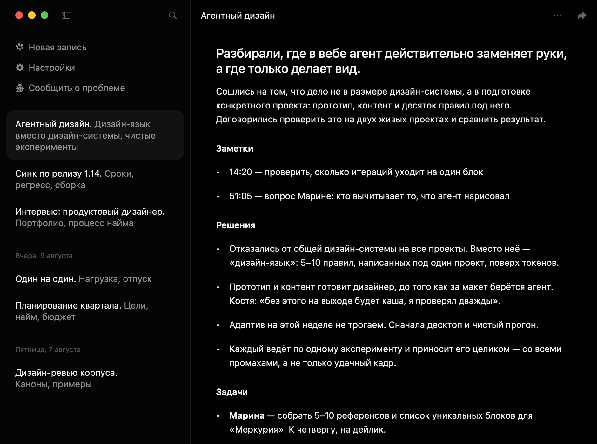

Записи и саммари встреч. Бесплатно, локально, на русском.
Сам включает запись и оставляет текст, а не ощущение: вечером видно, о чём договорились, через месяц — как шёл проект.
macOS 14.4 и новее · Apple Silicon


Сам включает запись и оставляет текст, а не ощущение: вечером видно, о чём договорились, через месяц — как шёл проект.
macOS 14.4 и новее · Apple Silicon
